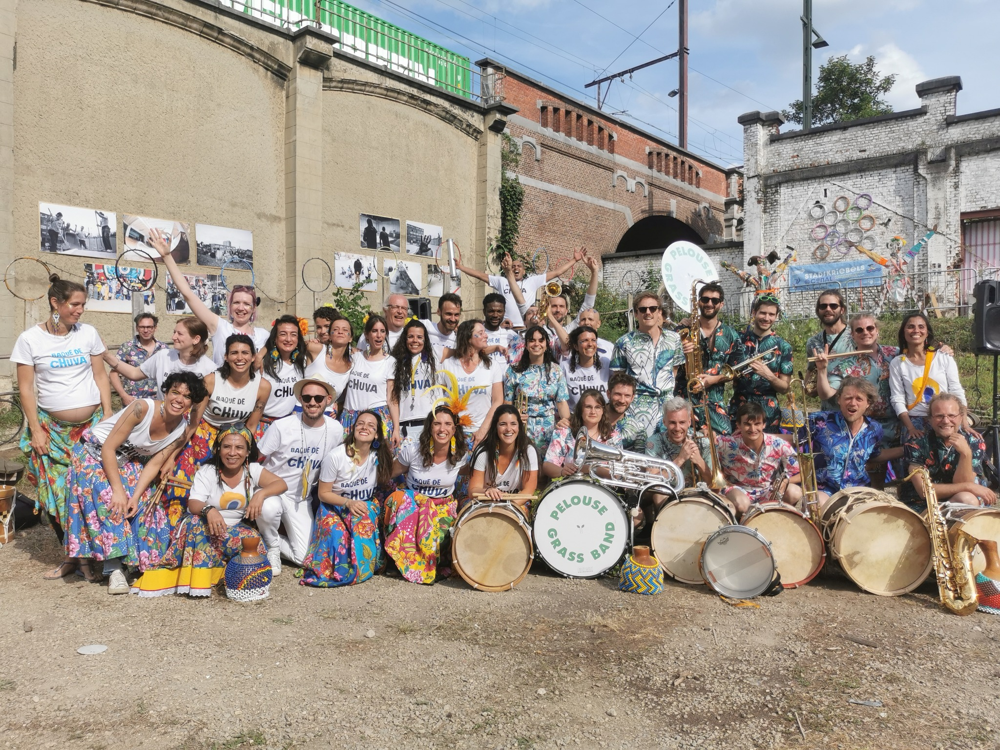
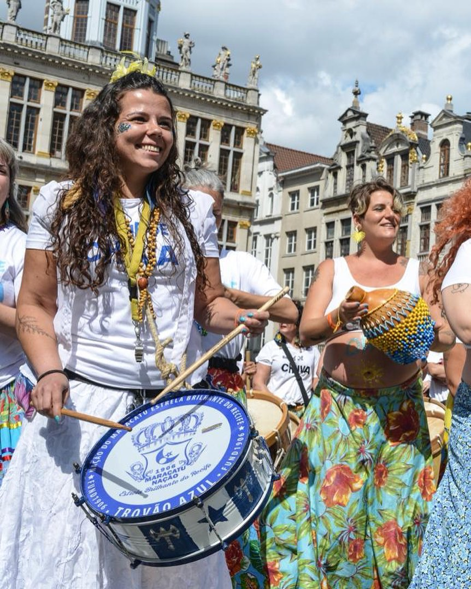
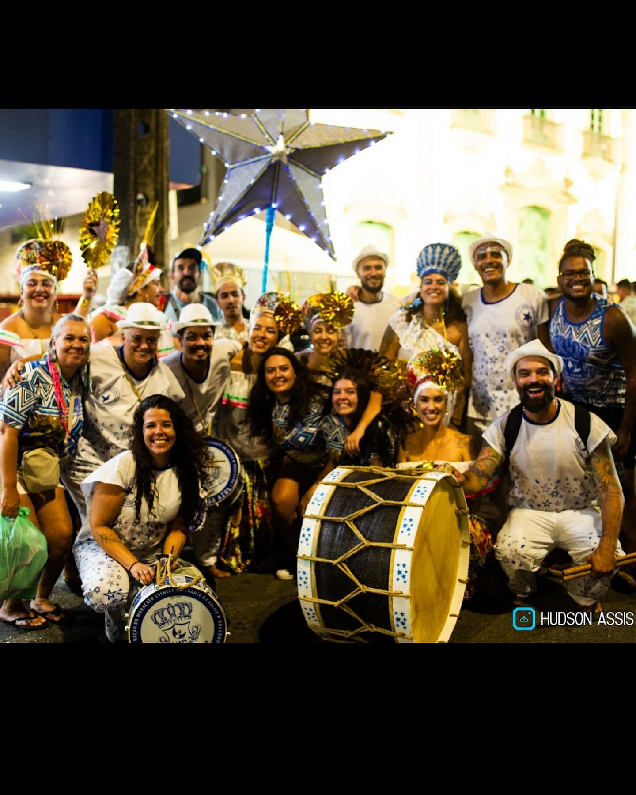
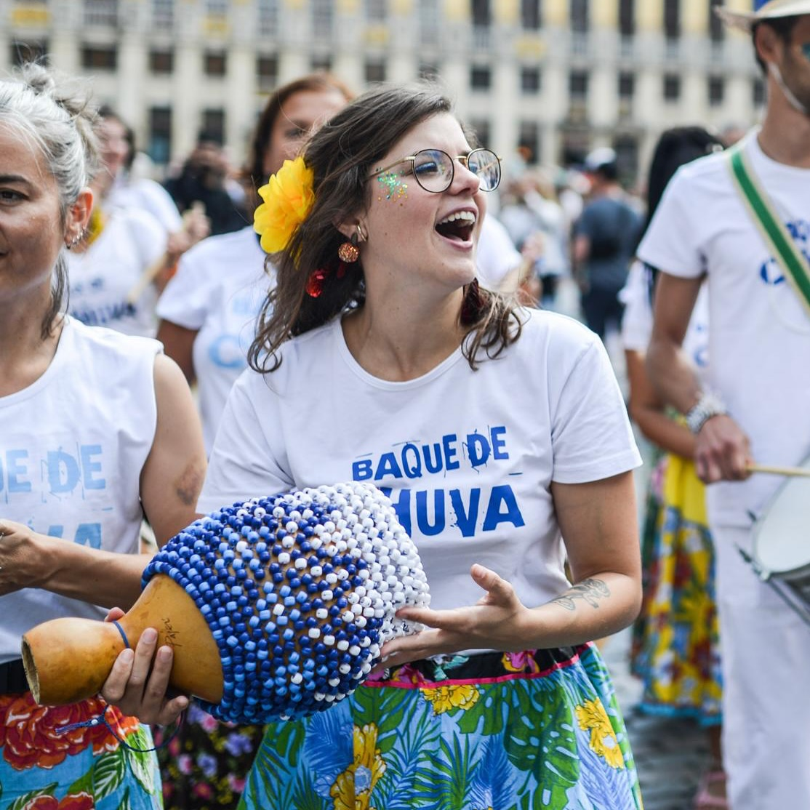
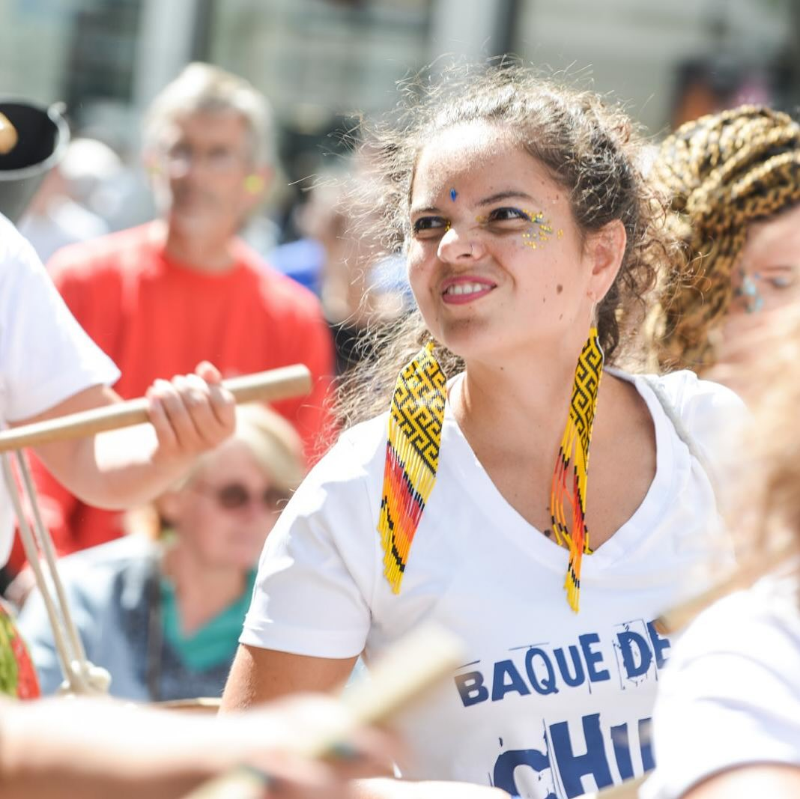

BAQUE DE CHUVA

Brussels Maracatu • Founded in 2016
The Rain Beat of Pernambuco in the Heart of Europe

A Brazilian fanfare bringing the power of maracatu to Europe since 2016.
Baque de Chuva is a Brussels-based percussion collective made up of residents from diverse musical traditions and origins. United by a shared passion for the ancestral rhythms of Pernambuco, we reappropriate traditional Maracatu de Baque Virado — a festive, powerful, and deeply danceable music that accompanies popular carnivals in northeastern Brazil.
Our name, "Baque de Chuva" (the Rain Beat), evokes the thunderous power of our drums echoing like tropical rain — unstoppable, cleansing, and full of life.

An Afro-Brazilian tradition of strength and resistance born in Pernambuco
Maracatu Nação is a musical rhythm, dance, and ritual that originated in Recife, Pernambuco. Rooted in the coronation ceremonies of the Reis do Congo (Kings of Congo) — enslaved Africans who were granted symbolic leadership — maracatu carries centuries of resistance, spirituality, and cultural identity.
With its hypnotic percussion and royal processions, maracatu transforms streets into sacred spaces during Carnival, when the Nações (nations) parade through Recife and Olinda.
Traditional maracatu group, organized as a "nation" with its own identity, songs, and spiritual foundation
The sacred moment when nations parade through the streets of Recife in royal processions
An expression of Black culture and Afro-Brazilian identity, fundamental to Pernambuco's heritage
Trovão Azul — The Blue Thunder
Baque de Chuva maintains a deep connection to Maracatu Nação Estrela Brilhante do Recife, one of the most legendary and traditional maracatu nations, founded in 1906. Known as Trovão Azul (Blue Thunder), this Nação is a cornerstone of Pernambuco's cultural identity.
Through regular exchanges, workshops, and pilgrimages to Recife, we stay connected to the living source of maracatu. This relationship shapes our musical identity and deepens our respect for the tradition we carry across the Atlantic.

Maracatu: music made to move through the streets
Explosive and captivating, maracatu transforms every parade into an unforgettable experience. The percussive energy of the group sweeps everything in its path, filling public spaces with the ancestral power of Pernambuco.
Book UsCapturing the energy and joy of Baque de Chuva

Whether you're an experienced percussionist or a complete beginner, Baque de Chuva welcomes everyone who feels the call of the drum.
Brussels, Belgium
Rehearsals in the heart of the city
Weekly sessions
All levels welcome — no experience needed
Part of ASBL KWA!
A vibrant multicultural collective